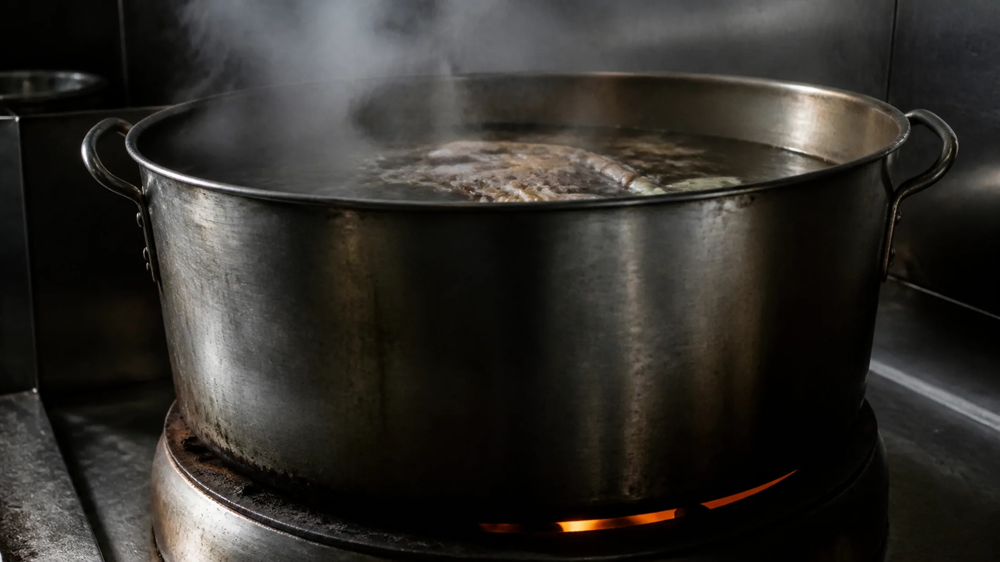
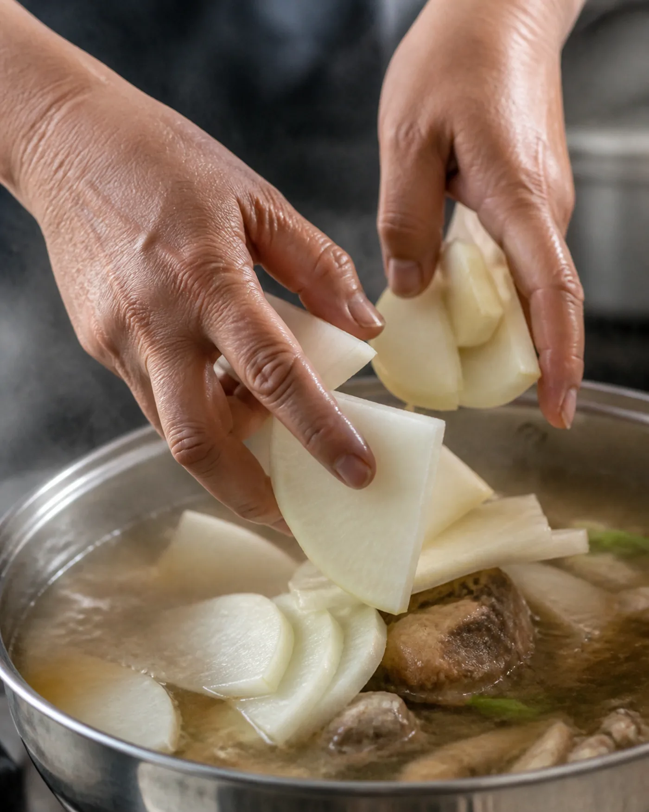
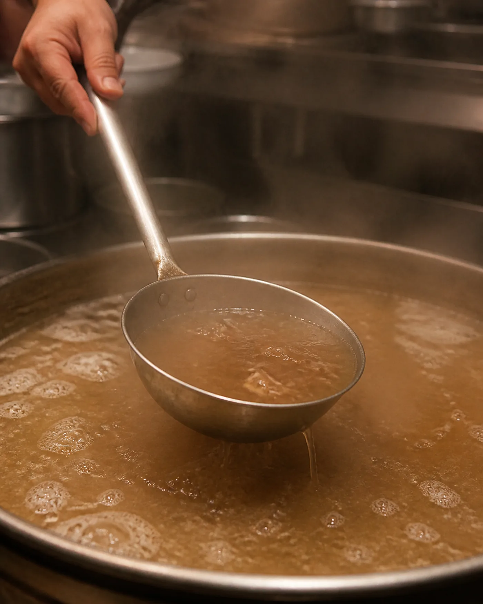
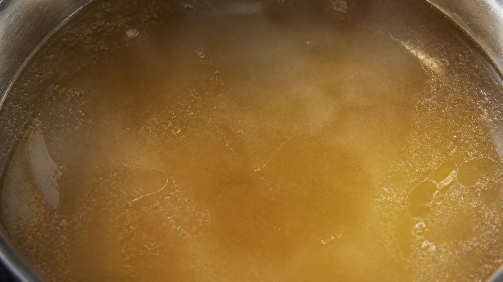
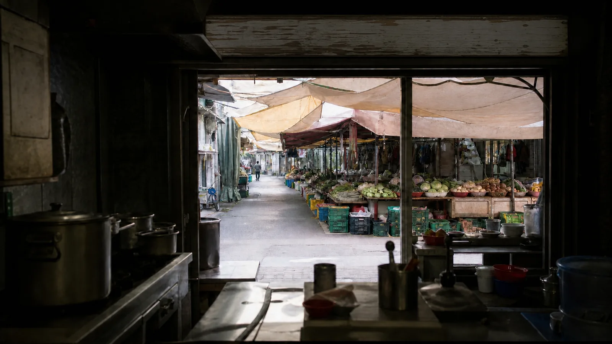
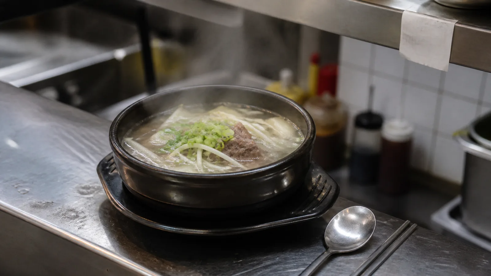

DAWN
불을 켜는 사람
새벽의 주방은 아직 어둡다.
가장 먼저 하는 일은 불을 켜는 것이다. 스위치가 아니라 솥 아래의 불. 그 다음에 솥의 상태를 본다. 몇 초쯤 걸린다. 무엇을 보는지는 본인만 안다.
메뉴판에는 이름만 적힌다. 그 맛을 어제와 같게 유지하는 일은 사람의 몫이다. 손님에게는 한 끼지만, 만드는 사람에게는 같은 판단을 하루에 수십 번 반복하는 노동이다.

COST
계산기를 두드리는 밤
이 집의 국물은 열다섯 시간이 걸린다.
그런데 여기서 이상한 일이 생긴다. 여덟 시간만 끓여도 팔린다는 것이다. 본인이 그렇게 말한다.
【예시안】 “여덟 시간만 끓여도 팔려요. 손님 열 명 중 아홉은 모를 거예요.”
일곱 시간의 차이. 가스값과 사람의 시간이 그만큼 더 들어간다. 재료도 마찬가지다. 사골과 양지머리를 함께 쓰면 원가가 올라간다.
【예시안】 “원가요? 매달 계산기 두드려요. 안 두드리면 거짓말이죠. 바꿔볼까 생각한 적도 있어요.”
바꾸지 않은 이유는 신념 같은 게 아니었다. 훨씬 현실적인 이유였다.
【예시안】 “근데 못 바꿔요. 손님이 먼저 알아요. 말은 안 하고 그냥 안 와요. 그게 제일 무섭습니다.”
BROTH
오래 끓이는 것과 진한 것은 다르다
열다섯 시간이라는 숫자를 먼저 정한 게 아니라고 했다.
【예시안】 “오래 끓이는 거랑 진한 거는 달라요. 세게 오래 끓이면 국물이 탁해지고 끝에 쓴맛이 올라와요. 그건 진한 게 아니라 상한 쪽에 가까운 거예요.”
처음 세 시간만 불을 세게 쓴다. 그 다음부터는 국물 표면이 겨우 떨릴 정도로 낮춘다. 끓인다기보다 뜨겁게 유지하는 쪽에 가깝다.
【예시안】 “그렇게 가면 열몇 시간이 걸려요. 15시간을 목표로 잡은 게 아니라, 제대로 하면 그만큼 걸리는 거예요.”
다 됐다는 신호를 묻자, 손으로 설명했다.
【예시안】 “국물을 한 숟갈 떠서 입술에 대보면 살짝 붙어요. 그게 나오면 그날 육수는 끝난 겁니다.”
사골은 뼈대고 양지는 살결이라고 했다. 사골만 쓰면 무겁고 목 뒤에 뭔가 남는다. 양지머리는 결이 촘촘해 오래 익혀도 풀어지지 않는다.
【예시안】 “국물에 고기 냄새가 아니라 고기 맛을 남겨요. 이게 다릅니다.”



CHANGE
변한 것과 변하지 않은 것
맛이 변했느냐는 질문에는 곧바로 답했다.
【예시안】 “변했죠. 안 변했다고 하면 그건 장사하는 사람 말이 아니에요.”
가장 크게 변한 건 간이라고 했다. 예전엔 훨씬 짰다. 냉장고가 흔치 않던 시절의 버릇이 남아 있었고, 손님들이 대개 몸을 쓰고 오는 사람들이었다. 다대기도 예전엔 처음부터 풀어서 나갔는데 지금은 따로 낸다.
바꾸지 않은 것은 순서다.
【예시안】 “무 넣고 몇 분 뒤에 배추 넣고, 콩나물은 맨 마지막에. 이건 손대면 안 돼요. 재료가 같아도 순서 틀리면 다른 국이 나와요.”
그리고 한 문장을 덧붙였다.
【예시안】 “맛이 안 변한 집은 없어요. 변하는 걸 알고 어디까지 변할지를 정해놓은 집이 있을 뿐이지.”

FAMILY
솥은 퇴근을 안 한다
이 일이 직업이 아니라 가족 사업이라는 게 무엇이 다르냐고 물었다.
【예시안】 “직업은 퇴근이 있잖아요. 근데 솥은 퇴근을 안 해요. 제가 자든 말든 계속 끓고 있어요.”
어릴 때 새벽에 나오면 부엌에 불이 켜져 있었다고 했다. 매일. 그땐 그게 그냥 집 풍경인 줄 알았다고. 지금은 본인이 그 불을 켠다.
그만둘까 생각한 적이 있느냐는 질문에는 한참 뒤에 답이 돌아왔다.
【예시안】 “있었어요. 근데 그때 매일 오시던 어르신이 한동안 안 보이시다가 다시 오셔서, 병원에 있었는데 여기 국밥 생각이 나서 걸어왔다고 하시더라고요. 그 말 듣고 나면 못 그만둬요. 저 하나 그만두는 게 아니게 되니까.”
ONE
그 한 명
마지막으로 물었다. 음식을 판다는 건 어떤 의미인가.
【예시안】 “생계 맞아요. 그건 부정 안 해요. 이걸로 애들 키웠는데 아니라고 하면 거짓말이죠.”
그런데 생계만으로는 열다섯 시간이 설명되지 않는다고 했다. 열 명 중 아홉은 모르는 차이다.
【예시안】 “그 한 명 때문에 하는 거예요. 그 한 명이 알아보고 다시 오면, 그날 하루가 그냥 하루가 아니게 되거든요.”
그리고 이렇게 닫았다.
【예시안】 “저희는 한 끼를 파는 게 아니에요. 그날 그 사람 컨디션을 파는 거예요. 국밥 먹고 나가는 뒷모습을 보면 알아요, 잘 나갔는지 아닌지.”

뚝배기가 놓이는 순간, 우리가 보는 건 한 그릇이다. 그 안에 일곱 시간의 차이가 들어 있다는 건 보이지 않는다.
열 명 중 아홉은 모른다. 알아보는 한 명이 되고 싶다면, 01 FOCUS의 순서대로 먹어 보시길.